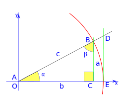

La trigonometría es una rama de la matemática, cuyo significado etimológico es
'la medición de los triángulos'. Deriva de los términos griegos τριγωνοϛ trigōnos
'triángulo' y μετρον metron 'medida'.
En términos generales, la trigonometría es el estudio de las razones trigonométricas:
seno, coseno, tangente, cotangente, secante y cosecante. La trigonometría se aplica
a otras ramas de la geometría, o la geometría analítica en particular geometría plana
o geometría del espacio. En soluciones de ecuaciones diferenciales ordinarias ( y = y´´),
series de Fourier usadas en ecuaciones en derivadas parciales. Se usa en la mecánica.
Posee numerosas aplicaciones, entre las que se encuentran: las técnicas de triangulación,
por ejemplo, son usadas en astronomía para medir distancias a estrellas próximas, en la
medición de distancias entre puntos geográficos, y en sistemas globales de navegación por satélites.

La transformacion de radianges a angulos:
| Angulo (Grados) | Angulo (rad) | Sen(x) | Cos(x) | Tan(x) | |||||||||||||||||||||||||||||||||||
|---|---|---|---|---|---|---|---|---|---|---|---|---|---|---|---|---|---|---|---|---|---|---|---|---|---|---|---|---|---|---|---|---|---|---|---|---|---|---|---|
| 0 | 0 | 1 | 0 | 0 | 30 | &frac{pi}{6} | 1 | 0 | 0 | 45 | 0 | 1 | 0 | 0 | 60 | 0 | 1 | 0 | 0 | 90 | 0 | 1 | 0 | 0 | 180 | 0 | 1 | 0 | 0 | 270 | 0 | 1 | 0 | 0 | 360 | 0 | 1 | 0 | 0 |